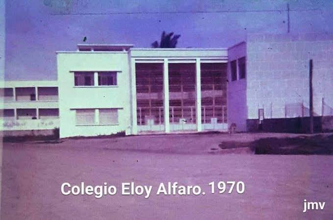
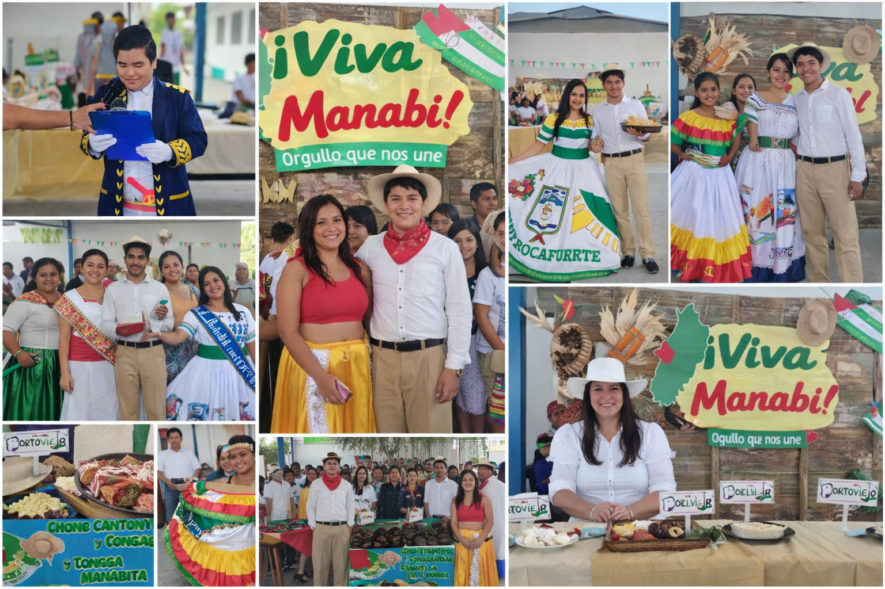
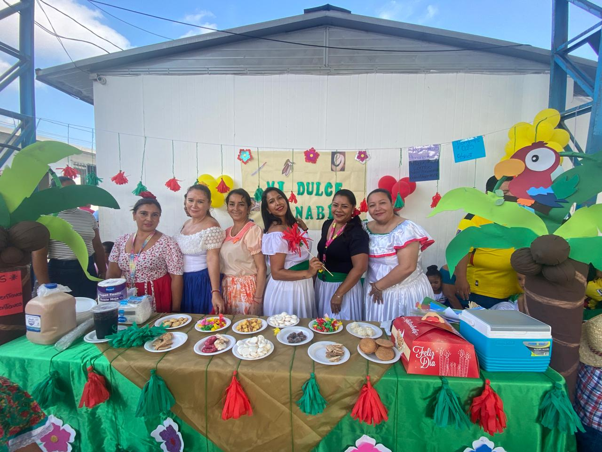
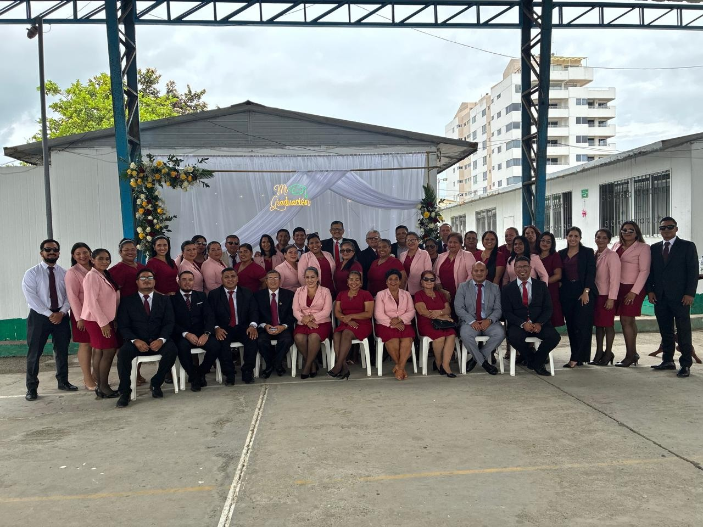

IDENTIDAD INSTITUCIONAL
Una historia que
inspira futuro.
Más de un siglo acompañando a generaciones de Bahía de Caráquez y la zona norte de Manabí.
Conoce nuestro propósito ↓Recorre nuestra historia ↓


01 QUIÉNES SOMOS
Somos una comunidad
que educa y transforma.
Somos la Unidad Educativa Fiscal Eloy Alfaro, una comunidad de Bahía de Caráquez que acompaña a sus estudiantes desde Inicial hasta Bachillerato. Promovemos una formación integral, inclusiva y conectada con nuestra historia y entorno.
Con el compromiso de estudiantes, familias, docentes y autoridades, creamos oportunidades para aprender, convivir y aportar al desarrollo de nuestra comunidad.
Síntesis elaborada a partir del Plan Educativo Institucional 2023–2027.
Bahía de Caráquez
✦ NUESTRO HORIZONTE
Propósito misional
Brindar una educación de calidad y calidez en todos los niveles, basada en principios democráticos, derechos humanos y valores. Promovemos la formación moral, humanística, cívica, histórica y científica, para que cada estudiante desarrolle competencias y se prepare para aportar a su comunidad.
Este propósito se fortalece con docentes y directivos comprometidos, experiencias de aprendizaje y espacios que favorecen el crecimiento integral.
Síntesis fiel del Propósito Misional descrito en el PEI institucional.

02 BASES DE NUESTRA IDENTIDAD
Principios que orientan
cada aprendizaje.
Acceso universal
Educación de calidad, inclusiva y equitativa, con oportunidades para aprender y completar cada etapa.
No discriminación
Respeto a los derechos y la dignidad de todas las personas, sin exclusión ni trato desigual.
Igualdad de oportunidades
Entornos accesibles que consideran las distintas necesidades, capacidades y características.
03 NUESTROS COMPROMISOS
Así convivimos,
así aprendemos.
Acuerdos que nos ayudan a aprender en un ambiente respetuoso, participativo e inclusivo.
Convivencia y buen trato
Construimos relaciones basadas en el respeto, el diálogo, los acuerdos y una cultura de paz.
Aprendizaje activo
Aprendemos participando, explorando y haciendo; el docente guía y acompaña cada proceso.
Alianza familia y escuela
Familias y escuela acompañamos el aprendizaje y aportamos a la mejora de nuestra institución.
Derechos con responsabilidad
Respetamos los derechos de cada estudiante y asumimos nuestros deberes con responsabilidad.
Participación estudiantil
Escuchamos las ideas de niñas, niños y adolescentes y las tomamos en cuenta.
Trabajo cooperativo
Colaboramos en proyectos y decisiones que fortalecen a toda la comunidad educativa.
Inclusión activa
Abrimos espacios para que todas las personas participen en actividades sociales, culturales y deportivas.
Respeto a la diversidad
Reconocemos nuestras diferencias y trabajamos contra toda forma de discriminación.

04 LO QUE NOS GUÍA
Valores que ponemos
en acción.
Se expresan en nuestras decisiones, en el trato cotidiano y en el cuidado de nuestra comunidad.
Respeto
Nos tratamos con dignidad, cortesía y consideración en cada espacio del plantel.
Responsabilidad
Cumplimos los acuerdos y respondemos por nuestras decisiones y compromisos.
Solidaridad
Acompañamos a quien necesita apoyo y compartimos con generosidad.
Honestidad
Actuamos con verdad y transparencia, y cuidamos lo que pertenece a todos.
Conciencia ecológica
Protegemos los espacios del plantel y cuidamos la naturaleza.
05 RESEÑA HISTÓRICA
Una historia que sigue
creciendo.
Hitos del recorrido de la Unidad Educativa Eloy Alfaro en Bahía de Caráquez.
Un lugar para educar
Se concede el terreno para el proyecto escolar.
Liceo Mercantil
Comienza el camino educativo del plantel.
Colegio Nacional
El Liceo Pedro Carbo obtiene esta categoría.
Eloy Alfaro
Se establece el nombre que nos identifica.
Nueva infraestructura
Se gestiona y construye un nuevo edificio.
✦ ARCHIVO FOTOGRÁFICO
Recuerdos de nuestra comunidad
Las fotografías provienen del archivo compartido por la institución. Las leyendas se pueden editar si se confirman fechas o detalles.
07 EQUIPO ACADÉMICO
Cuerpo docente actual
Docentes que acompañan el aprendizaje y crecimiento de nuestros estudiantes.
